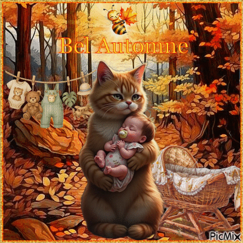
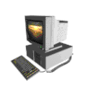

𝓐𝓺𝓾𝓲 𝓿𝓸𝓬𝓮̂ 𝓿𝓮𝓻𝓪 𝓬𝓾𝓻𝓲𝓸𝓼𝓲𝓭𝓪𝓭𝓮𝓼 𝓼𝓸𝓫𝓻𝓮 𝓶𝓲𝓶, 𝓹𝓮𝓬𝓾𝓵𝓲𝓪𝓵𝓲𝓭𝓪𝓭𝓮𝓼 𝓺𝓾𝓮 𝓮 𝓽𝓻𝓪𝓬̧𝓸𝓼 𝓭𝓮 𝓹𝓮𝓻𝓼𝓸𝓷𝓪𝓵𝓲𝓭𝓪𝓭𝓮 𝓷𝓪̃𝓸 𝓶𝓾𝓲𝓽𝓸 𝓪𝓹𝓪𝓻𝓮𝓷𝓽𝓮𝓼 𝓺𝓾𝓮 𝓮𝓾 𝓹𝓸𝓼𝓼𝓾𝓸

𝑮𝒐𝒔𝒕𝒐 𝒅𝒆 𝒄𝒐𝒊𝒔𝒂 𝒅𝒆 𝑻𝒆𝒓𝒓𝒐𝒓, 𝒄𝒐𝒎𝒐 𝒇𝒊𝒍𝒎𝒆𝒔, 𝒔𝒆𝒓𝒊𝒆𝒔, 𝒗𝒊𝒅𝒆𝒐𝒔 𝒆 𝒂 𝒑𝒓𝒐𝒑𝒓𝒊𝒂 𝒆𝒔𝒕𝒆𝒕𝒊𝒄𝒂 𝒒𝒖𝒆 𝒐 𝒕𝒆𝒓𝒓𝒐𝒓 𝒆 𝒐 𝒉𝒐𝒓𝒓𝒐𝒓 𝒑𝒐𝒔𝒔𝒖𝒊. 𝑪𝒐𝒎𝒆𝒄𝒆𝒊 𝒈𝒐𝒔𝒕𝒂𝒏𝒅𝒐 𝒏𝒂 𝒎𝒊𝒏𝒉𝒂 𝒑𝒓𝒆-𝒂𝒅𝒐𝒍𝒆𝒄𝒆𝒏𝒄𝒊𝒂/𝒊𝒏𝒇𝒂𝒏𝒄𝒊𝒂, 𝒎𝒆𝒖 𝒑𝒂𝒊 𝒆 𝒆𝒖 𝒂𝒅𝒐𝒓𝒂𝒗𝒂𝒎𝒐𝒔 𝒂𝒔𝒔𝒊𝒔𝒕𝒊𝒓 𝒇𝒊𝒍𝒎𝒆𝒔 𝒅𝒆 𝒕𝒆𝒓𝒓𝒐𝒓 𝒋𝒖𝒏𝒕𝒐𝒔 𝒆 𝒂𝒕𝒆 𝒉𝒐𝒋𝒆 𝒇𝒂𝒛𝒆𝒎𝒐𝒔 𝒊𝒔𝒔𝒐 𝒂𝒔 𝒗𝒆𝒛𝒆𝒔. 𝑨𝒕𝒖𝒂𝒍𝒎𝒆𝒏𝒕𝒆 𝒈𝒐𝒔𝒕𝒐 𝒅𝒂 𝒆𝒔𝒕𝒆𝒕𝒊𝒄𝒂 𝒅𝒆 𝑨𝒏𝒂𝒍𝒐𝒈 𝑯𝒐𝒓𝒓𝒐𝒓 𝒆 𝑨𝑹𝑮 𝒒𝒖𝒆 𝒔𝒂̃𝒐 𝒗𝒊𝒅𝒆𝒐𝒔 𝒆 𝒉𝒊𝒔𝒕𝒐𝒓𝒊𝒂𝒔 𝒅𝒆 𝒕𝒆𝒓𝒓𝒐𝒓 𝒊𝒏𝒕𝒆𝒓𝒂𝒕𝒊𝒗𝒂𝒔 𝒅𝒂 𝒊𝒏𝒕𝒆𝒓𝒏𝒆𝒓𝒕.
𝑻𝒆𝒏𝒉𝒐 𝑻𝑫𝑯 𝒅𝒊𝒂𝒈𝒏𝒐𝒔𝒕𝒊𝒄𝒂𝒅𝒐 𝒅𝒆𝒔𝒅𝒆 𝒐𝒔 3 𝒂𝒏𝒐𝒔 𝒅𝒆 𝒊𝒅𝒂𝒅𝒆, 𝒂𝒏𝒔𝒊𝒆𝒅𝒂𝒅𝒆, 𝒕𝒓𝒂𝒄̧𝒐𝒔 𝑻𝑬𝑨 𝒆 𝒃𝒂𝒊𝒙𝒐 𝒑𝒓𝒐𝒄𝒆𝒔𝒔𝒂𝒎𝒆𝒏𝒕𝒐 𝒅𝒆 𝒊𝒏𝒇𝒐𝒓𝒎𝒂𝒄̧𝒂̃𝒐. 𝑨𝒑𝒆𝒔𝒂𝒓 𝒅𝒂𝒔 𝒎𝒊𝒏𝒉𝒂𝒔 "𝒍𝒊𝒎𝒊𝒕𝒂𝒄̧𝒐̃𝒆𝒔", 𝒕𝒂𝒎𝒃𝒆́𝒎 𝒑𝒐𝒔𝒔𝒖𝒐 𝒉𝒂𝒃𝒊𝒍𝒊𝒅𝒂𝒅𝒆𝒔 𝒒𝒖𝒆 𝒎𝒆 𝒂𝒋𝒖𝒅𝒂𝒎 𝒏𝒐 𝒅𝒊𝒂 𝒂 𝒅𝒊𝒂, 𝒄𝒐𝒎𝒐 𝒖𝒎𝒂 𝒃𝒐𝒂 𝒎𝒆𝒎𝒐́𝒓𝒊𝒂 𝒇𝒐𝒕𝒐𝒈𝒓𝒂́𝒇𝒊𝒄𝒂 𝒆 𝒖𝒎 𝑸𝑰 𝒅𝒆 117. 𝑨𝒑𝒆𝒔𝒂𝒓 𝒅𝒆 𝒕𝒖𝒅𝒐 𝒊𝒔𝒔𝒐 𝒑𝒐𝒅𝒆 𝒕𝒆𝒓 𝒖𝒎 𝒗𝒊𝒅𝒂 𝒓𝒆𝒍𝒂𝒕𝒊𝒗𝒂𝒎𝒆𝒏𝒕𝒆 𝒏𝒐𝒓𝒎𝒂𝒍, 𝒂𝒑𝒆𝒔𝒂𝒓 𝒅𝒆 𝒃𝒖𝒍𝒍𝒚𝒊𝒏𝒈 𝒆 𝒑𝒆𝒓𝒊́𝒐𝒅𝒐𝒔 𝒅𝒆𝒑𝒓𝒆𝒔𝒔𝒊𝒗𝒐𝒔, 𝒉𝒐𝒋𝒆 𝒔𝒐𝒖 𝒎𝒆𝒅𝒊𝒄𝒂𝒅𝒐 𝒆 𝒑𝒐𝒔𝒔𝒖𝒐 𝒂𝒎𝒊𝒈𝒐𝒔 𝒆 𝒖𝒎𝒂 𝒇𝒂𝒎𝒊́𝒍𝒊𝒂 𝒒𝒖𝒆 𝒎𝒆 𝒂𝒎𝒂 𝒆 𝒆𝒖 𝒐𝒔 𝒂𝒎𝒐 𝒎𝒖𝒊𝒕𝒐.
𝑴𝒆𝒖 𝒏𝒖́𝒎𝒆𝒓𝒐 𝒅𝒂 𝒔𝒐𝒓𝒕𝒆 𝒆́ 𝒐 𝒏𝒖́𝒎𝒆𝒓𝒐 3, 𝒏𝒂𝒔𝒄𝒊 𝒏𝒐 𝒅𝒊𝒂 30/09(3𝑿3)/2003, 𝒂𝒔 3 𝒅𝒂 𝒕𝒂𝒓𝒅𝒆, 𝒆𝒖 𝒕𝒊𝒏𝒉𝒂 3 𝒂𝒎𝒊𝒈𝒐𝒔 𝒊𝒎𝒂𝒈𝒊𝒏𝒂́𝒓𝒊𝒐𝒔, 𝒑𝒐𝒓 𝒂𝒍𝒈𝒖𝒎𝒂 𝒓𝒂𝒛𝒂̃𝒐 𝒐 𝒏𝒖́𝒎𝒆𝒓𝒐 3 𝒎𝒆 𝒔𝒆𝒈𝒖𝒆 𝒆 𝒔𝒆𝒎𝒑𝒓𝒆 𝒂𝒍𝒈𝒐 𝒃𝒐𝒎 𝒂𝒄𝒐𝒏𝒕𝒆𝒄𝒆 𝒆𝒍𝒆 𝒆𝒔𝒕𝒂́ 𝒑𝒐𝒓 𝒑𝒆𝒓𝒕𝒐.
𝑱𝒂́ 𝒕𝒊𝒗𝒆 𝒖𝒎 𝒄𝒂𝒄𝒉𝒐𝒓𝒓𝒐 𝒆 𝒖𝒎𝒂 𝒕𝒂𝒓𝒕𝒂𝒓𝒖𝒈𝒂, 𝒂 𝒕𝒂𝒓𝒕𝒂𝒓𝒖𝒈𝒂 𝒔𝒆 𝒄𝒉𝒂𝒎𝒂𝒗𝒂 𝒕𝒐𝒓𝒖𝒈𝒂(𝒆𝒖 𝒔𝒆𝒊 𝒐 𝒏𝒐𝒎𝒆 𝒏𝒂̃𝒐 𝒆́ 𝒄𝒓𝒊𝒂𝒕𝒊𝒗𝒐 𝒎𝒂𝒔 𝒆𝒖 𝒔𝒐́ 𝒕𝒊𝒏𝒉𝒂 7 𝒂𝒏𝒐𝒔 𝒅𝒆 𝒊𝒅𝒂𝒅𝒆), 𝒂𝒐𝒔 12 𝒆𝒖 𝒈𝒂𝒏𝒉𝒆𝒊 𝒎𝒆𝒖 𝒄𝒂𝒄𝒉𝒐𝒓𝒓𝒐 𝒆 𝒅𝒆𝒊 𝒐 𝒏𝒐𝒎𝒆 𝒅𝒆 𝑳𝒖𝒄𝒌 𝒒𝒖𝒆 𝒆́ 𝒔𝒐𝒓𝒕𝒆 𝒆𝒎 𝒊𝒏𝒈𝒍𝒆̂𝒔, 𝒆𝒖 𝒂𝒎𝒂𝒗𝒂 𝒆𝒍𝒆, 𝒆𝒍𝒆 𝒆𝒓𝒂 𝒑𝒆𝒍𝒖𝒅𝒊𝒏𝒉𝒐 𝒆 𝒃𝒓𝒂𝒏𝒒𝒖𝒊𝒏𝒉𝒐 𝒕𝒊𝒑𝒐 𝒖𝒎 𝒇𝒍𝒐𝒄𝒐 𝒅𝒆 𝒏𝒆𝒗𝒆, 𝒆𝒙𝒕𝒓𝒆𝒎𝒂𝒎𝒆𝒏𝒕𝒆 𝒃𝒓𝒊𝒏𝒄𝒂𝒍𝒉𝒂̃𝒐, 𝒊𝒏𝒇𝒆𝒍𝒊𝒛𝒎𝒆𝒏𝒕𝒆 𝒆𝒍𝒆 𝒎𝒐𝒓𝒓𝒆𝒖 𝒆𝒎 2020 𝒏𝒂 𝒗𝒆𝒛𝒑𝒆𝒓𝒂 𝒅𝒐 𝒏𝒂𝒕𝒂𝒍, 𝒆𝒖 𝒄𝒉𝒐𝒓𝒆𝒊 𝒆 𝒂𝒕𝒆́ 𝒉𝒐𝒋𝒆 𝒔𝒊𝒏𝒕𝒐 𝒇𝒂𝒍𝒕𝒂 𝒅𝒆𝒍𝒆. 𝑴𝒂𝒔 𝒔𝒆𝒊 𝒒𝒖𝒆 𝒔𝒆 𝒆𝒙𝒊𝒔𝒕𝒊𝒓 𝒖𝒎 𝒍𝒖𝒈𝒂𝒓 𝒃𝒐𝒎 𝒆𝒍𝒆 𝒑𝒓𝒐𝒗𝒂𝒗𝒆𝒍𝒎𝒆𝒏𝒕𝒆 𝒗𝒂𝒊 𝒆𝒔𝒕𝒂 𝒍𝒂𝒓.
𝑬𝒖 𝒒𝒖𝒂𝒔𝒆 𝒏𝒂̃𝒐 𝒏𝒂𝒔𝒄𝒊, 𝒒𝒖𝒂𝒏𝒅𝒐 𝒎𝒊𝒏𝒉𝒂 𝒎𝒂̃𝒆 𝒆𝒔𝒕𝒂𝒗𝒂 𝒈𝒓𝒂́𝒗𝒊𝒅𝒂 𝒅𝒆 𝒎𝒊𝒎, 𝒆𝒍𝒆 𝒕𝒆𝒗𝒆 𝒖𝒎𝒂 𝒄𝒐𝒏𝒅𝒊𝒄̧𝒂̃𝒐 𝒎𝒆́𝒅𝒊𝒄𝒂 𝒄𝒉𝒂𝒎𝒂𝒅𝒂 𝒑𝒓𝒆́-𝒆𝒄𝒍𝒂̂𝒎𝒑𝒔𝒊𝒂 𝒒𝒖𝒆 𝒆́ 𝒖𝒎𝒂 𝒄𝒐𝒏𝒅𝒊𝒄̧𝒂̃𝒐 𝒒𝒖𝒆 𝒇𝒂𝒛 𝒂 𝒑𝒓𝒆𝒔𝒔𝒂̃𝒐 𝒂𝒓𝒕𝒆𝒓𝒊𝒂𝒍 𝒔𝒖𝒃𝒊𝒓 𝒎𝒖𝒊𝒕𝒐, 𝒂𝒍𝒆́𝒎 𝒅𝒊𝒔𝒔𝒐 𝒆𝒖 𝒆𝒔𝒕𝒂𝒗𝒂 𝒄𝒐𝒎 𝒂 𝒑𝒓𝒆𝒔𝒔𝒂̃𝒐 𝒕𝒂𝒎𝒃𝒆́𝒎 𝒎𝒖𝒊𝒕𝒐 𝒂𝒍𝒕𝒂, 𝒄𝒐𝒓𝒓𝒊𝒂 𝒓𝒊𝒔𝒄𝒐 𝒅𝒆 𝒕𝒂𝒏𝒕𝒐 𝒂 𝒎𝒊𝒏𝒉𝒂 𝒎𝒂̃𝒆 𝒒𝒖𝒂𝒏𝒕𝒐 𝒆𝒖 𝒎𝒐𝒓𝒓𝒆𝒓𝒎𝒐𝒔, 𝒆 𝒕𝒆𝒏𝒅𝒐 𝒊𝒔𝒔𝒐 𝒆𝒎 𝒗𝒊𝒔𝒕𝒂 𝒐 𝒎𝒆́𝒅𝒊𝒄𝒐 𝒒𝒖𝒆 𝒊𝒓𝒊𝒂 𝒓𝒆𝒂𝒍𝒊𝒛𝒂𝒓 𝒂 𝒄𝒆𝒔𝒂́𝒓𝒆𝒂 𝒏𝒂̃𝒐 𝒒𝒖𝒆𝒓𝒊𝒂 𝒇𝒂𝒛𝒆̂ 𝒍𝒂 𝒆𝒎 𝒎𝒊𝒏𝒉𝒂 𝒎𝒂̃𝒆 𝒑𝒐𝒓𝒒𝒖𝒆 𝒔𝒆𝒈𝒖𝒏𝒅𝒐 𝒆𝒍𝒆 “𝒆𝒍𝒂 𝒋𝒂́ 𝒊𝒓𝒊𝒂 𝒎𝒐𝒓𝒓𝒆𝒓 𝒅𝒆 𝒒𝒖𝒂𝒍𝒒𝒖𝒆𝒓 𝒋𝒆𝒊𝒕𝒐”, 𝒆𝒏𝒕𝒂̃𝒐 𝒎𝒊𝒏𝒉𝒂 𝒎𝒂̃𝒆 𝒆 𝒎𝒆𝒖 𝒑𝒂𝒊 𝒇𝒐𝒓𝒂𝒎 𝒑𝒂𝒓𝒂 𝒄𝒂𝒆𝒕𝒊𝒕𝒆́ 𝒂̀𝒔 𝒑𝒓𝒆𝒔𝒔𝒂𝒔 𝒆 𝒇𝒊𝒛𝒆𝒓𝒂𝒎 𝒐 𝒎𝒆𝒖 𝒑𝒂𝒓𝒕𝒐 𝒍𝒂́, 𝒆𝒖 𝒏𝒂𝒔𝒄𝒊 𝒔𝒂𝒖𝒅𝒂́𝒗𝒆𝒍 𝒆 𝒎𝒊𝒏𝒉𝒂 𝒎𝒂̃𝒆 𝒆𝒔𝒕𝒂́ 𝒗𝒊𝒗𝒂 𝒂𝒕𝒆́ 𝒉𝒐𝒋𝒆, 𝒂𝒍𝒆́𝒎 𝒅𝒆 𝒕𝒆𝒓 𝒅𝒂𝒅𝒐 𝒂 𝒍𝒖𝒛 𝒂 𝒐𝒖𝒕𝒓𝒐 𝒇𝒊𝒍𝒉𝒐..
𝑬𝒖 𝒒𝒖𝒆𝒓𝒐 𝒕𝒓𝒂𝒃𝒂𝒍𝒉𝒂𝒓 𝒄𝒐𝒎 𝒐 𝒅𝒆𝒔𝒆𝒏𝒗𝒐𝒍𝒗𝒊𝒎𝒆𝒏𝒕𝒐 𝒅𝒆 𝒋𝒐𝒈𝒐𝒔. 𝑸𝒖𝒂𝒊𝒔 𝒕𝒊𝒑𝒐𝒔 𝒅𝒆 𝒋𝒐𝒈𝒐𝒔, 𝒕𝒐𝒅𝒐𝒔 𝒐𝒔 𝒕𝒊𝒑𝒐𝒔 𝒅𝒆 𝒋𝒐𝒈𝒐𝒔 𝒑𝒐𝒔𝒔𝒊́𝒗𝒆𝒊𝒔, 𝒆𝒖 𝒔𝒐𝒖 𝒇𝒊𝒔𝒔𝒖𝒓𝒂𝒅𝒐 𝒆𝒎 𝒋𝒐𝒈𝒐𝒔 𝒅𝒆𝒔𝒅𝒆 𝒐𝒔 𝒎𝒆𝒖𝒔 3 𝒂𝒏𝒐𝒔 𝒅𝒆 𝒊𝒅𝒂𝒅𝒆, 𝒈𝒐𝒔𝒕𝒐 𝒂𝒔 𝒕𝒆́𝒄𝒏𝒊𝒄𝒂𝒔, 𝒅𝒐𝒔 𝒆𝒔𝒕𝒊𝒍𝒐𝒔, 𝒅𝒂𝒔 𝒉𝒊𝒔𝒕𝒐́𝒓𝒊𝒂𝒔, 𝒅𝒂 𝒕𝒆𝒙𝒕𝒖𝒓𝒂, 𝒕𝒖𝒅𝒐, 𝒋𝒐𝒈𝒐𝒔 𝒅𝒆 𝒕𝒂𝒃𝒖𝒍𝒆𝒊𝒓𝒐, 𝒋𝒐𝒈𝒐𝒔 𝒅𝒆 𝑹𝑷𝑮, 𝒋𝒐𝒈𝒐𝒔 𝒅𝒆 𝒄𝒂𝒓𝒕𝒂, 𝑱𝒐𝒈𝒐𝒔 𝒆𝒍𝒆𝒕𝒓𝒐̂𝒏𝒊𝒄𝒐𝒔, 𝒋𝒐𝒈𝒐𝒔 𝒅𝒆 𝒄𝒆𝒍𝒖𝒍𝒂𝒓, 𝒅𝒆 𝒄𝒐𝒏𝒔𝒐𝒍𝒆𝒔, 𝒅𝒆 𝒂𝒓𝒄𝒂𝒅𝒆𝒔, 𝒕𝒖𝒅𝒐, 𝒅𝒐 𝒆𝒔𝒔𝒆 𝒖𝒏𝒊𝒗𝒆𝒓𝒔𝒐 𝒎𝒆 𝒇𝒂𝒔𝒄𝒊𝒏𝒂 𝒆 𝒆𝒖 𝒔𝒆𝒎𝒑𝒓𝒆 𝒕𝒆𝒏𝒉𝒐 𝒖𝒎𝒂 𝒊𝒅𝒆𝒊𝒂 𝒏𝒐𝒗𝒐 𝒅𝒆 𝒋𝒐𝒈𝒐 𝒒𝒖𝒆 𝒒𝒖𝒆𝒓𝒊𝒂 𝒊𝒎𝒑𝒍𝒆𝒎𝒆𝒏𝒕𝒂𝒓 𝒆 𝒔𝒆𝒊 𝒒𝒖𝒆 𝒊𝒓𝒆𝒊 𝒄𝒓𝒊𝒂𝒓 𝒗𝒂́𝒓𝒊𝒐𝒔 𝒋𝒐𝒈𝒐𝒔 𝒏𝒐 𝒇𝒖𝒕𝒖𝒓𝒐.
